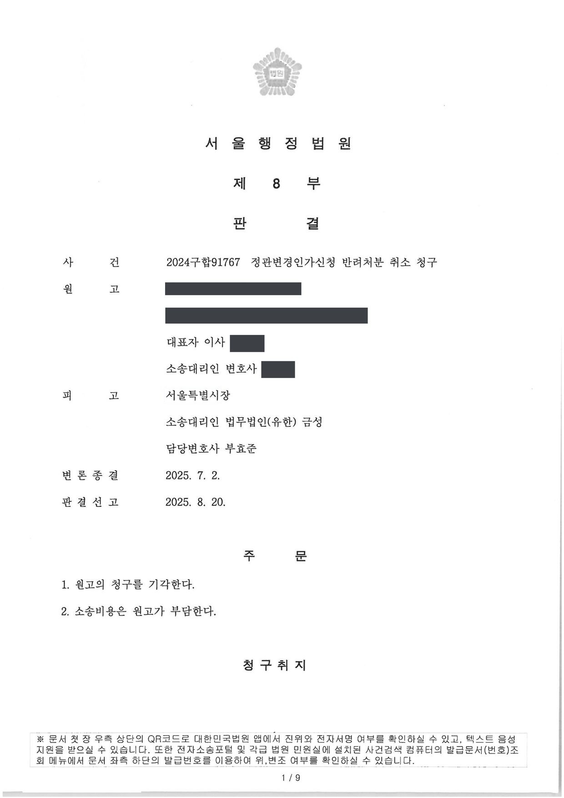
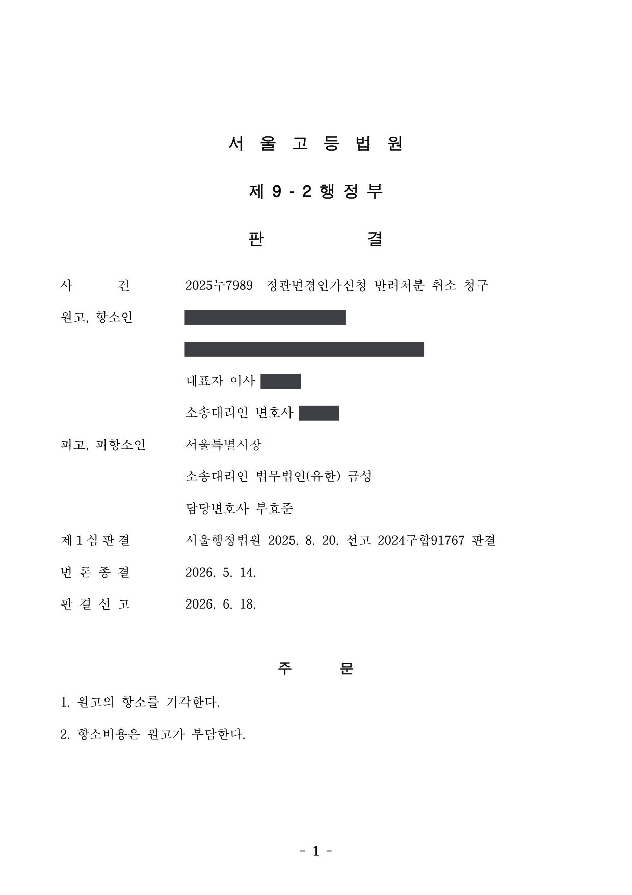
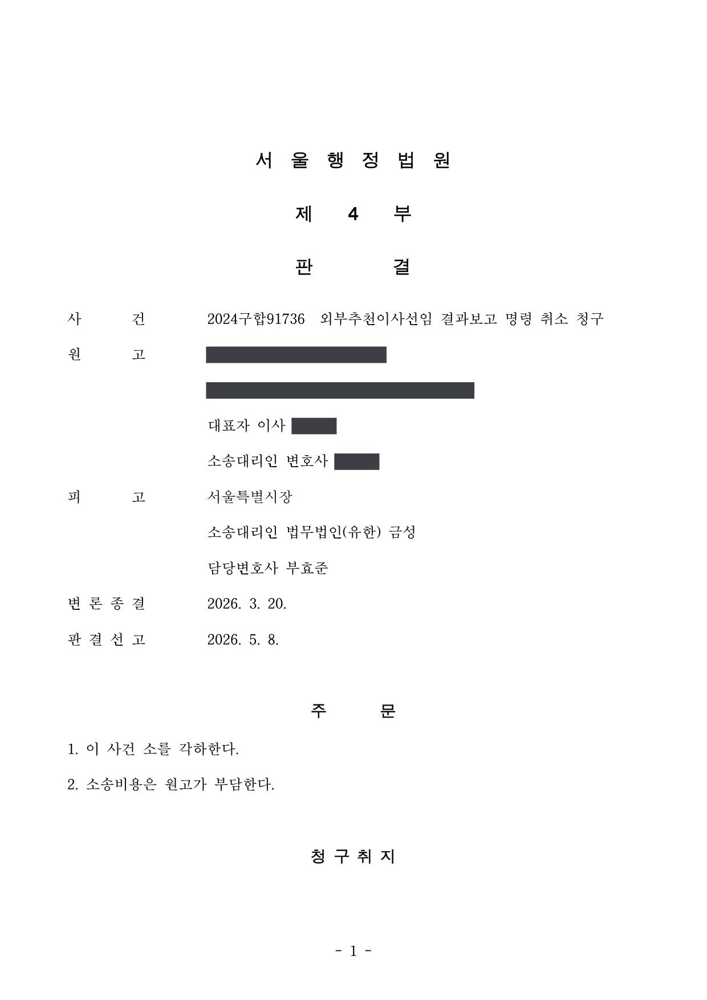
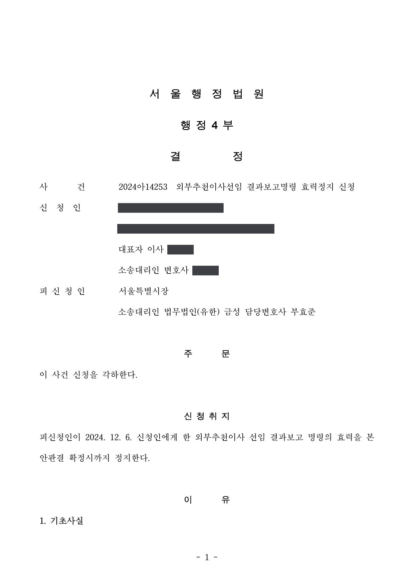
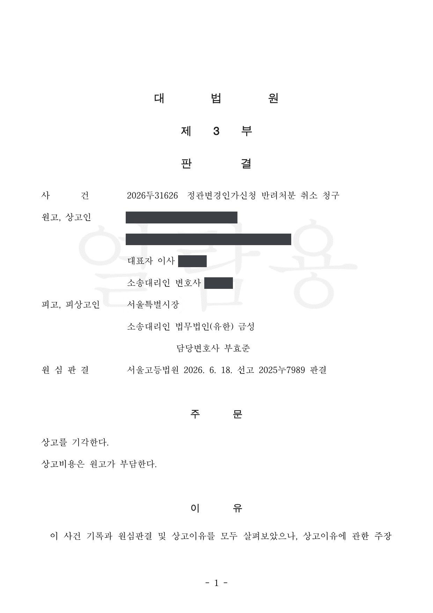

사회복지법인 정관변경인가신청 반려처분 · 외부추천이사 선임 결과보고 명령 취소소송 (1·2·3심, 집행정지)
서울행정법원 2024구합91767 · 서울고등법원 2025누7989 · 서울행정법원 2024구합91736 · 2024아14253 · 대법원 2026두31626 · 담당변호사 부효준
판결문





사건의 요지
사회복지법인의 주된 사무소 이전을 위한 정관변경인가 신청의 반려처분과 외부추천이사 선임에 관한 결과보고 명령에 대하여, 「사회복지사업법」상 인가의 재량과 명령의 처분성이 다투어진 사건들입니다. 정관변경인가신청 반려처분 취소청구는 대법원에서 상고가 받아들여지지 않아 확정되었습니다.
사건의 주요 내용
원고는 시·도지사(처분청)의 허가를 받아 설립된 사회복지법인으로, 장애인 거주시설 등 산하 사회복지시설 25개소 가운데 19개소가 처분청 관할 지역에 있고, 주된 사무소 이전 예정지인 다른 시·도에는 1개소가 있습니다. 원고는 2024년 10월 이사회 결의를 거쳐 정관상 주된 사무소의 소재지를 그 다른 시·도로 옮기는 내용의 정관변경 인가를 신청하였습니다.
처분청은 이전 예정지 관할 시·도와 협의한 결과, 이전 예정 주소지에 임대차계약이 없고 다른 기관이 사용 중인 점, 산하 시설 이전에 관한 협의 내역이나 기능보강 예산 확보가 없어 주된 사무소를 옮겨 시설 이전을 추진할 시급성·실현 가능성이 낮은 점, 시설 이전을 위해서라면 분사무소로도 충분한 점, 시설 대부분이 처분청 관할에 있고 그 보조금으로 운영되는 점 등을 들어 2024년 12월 인가신청을 반려하였습니다.
같은 날 처분청은 관할 구청장을 통해, 임기가 만료되는 외부추천이사를 시·도사회보장위원회가 추천한 후보자 중에서 선임하고 그 결과를 2024년 12월 20일까지 보고하라는 내용의 공문(외부추천이사 선임 결과보고 명령)을 보냈습니다. 원고는 추천된 후보자들이 자신과 갈등 관계에 있는 다른 사회복지법인과 이해관계가 있다며 재추천을 요청한 상태였습니다.
원고는 반려처분이 무효임을 확인하라는 소(2024구합91767)와 결과보고 명령을 취소하라는 소(2024구합91736)를 제기하고, 결과보고 명령에 대하여는 효력정지도 신청하였습니다(2024아14253). 효력정지 신청은 2025년 1월 각하되었고, 반려처분 사건은 2025년 8월 1심 청구 기각, 2026년 6월 항소 기각을 거쳐 2026년 10월 대법원에서 심리불속행으로 상고가 기각되어 확정되었으며, 결과보고 명령 사건은 2026년 5월 소 각하로 마무리되었습니다. 부효준 변호사는 처분청을 대리하였습니다.
쟁점
- 사회복지법인의 주된 사무소 소재지를 다른 시·도로 옮기는 정관변경의 인가가 주무관청의 재량행위인지, 법령에 거부 사유가 명시되어 있지 않은데도 인가를 거부한 것이 법률유보원칙에 어긋나는지
- 이전 예정지 시·도와의 협의 결과와 산하 시설의 분포·보조금 지원 상황을 들어 인가를 거부한 것이 재량권을 일탈·남용한 것인지
- 외부추천이사를 선임하고 그 결과를 보고하라는 공문이 항고소송의 대상인 행정처분에 해당하는지, 그 효력정지 신청이 적법한지
원고의 주장
- 사회복지사업법 제17조는 정관변경에 시·도지사의 인가를 받도록 할 뿐 인가를 거부할 수 있는 사유를 정하고 있지 않고, 시행규칙 제8조도 사업 변동이 없는 경우 이사회 회의록 사본과 정관변경안만 첨부하도록 하고 있으므로, 반려처분은 법령상 근거 없이 직업수행의 자유와 거주·이전의 자유를 침해한 것이라고 주장하였습니다(법률유보원칙 위반).
- 설령 정관변경인가가 재량행위라 하더라도 사회복지법인이 주된 사무소를 어디에 둘지는 지극히 사적인 영역의 문제이고, 이전 예정지 시·도가 반대하는 것은 예산 소요와 민원 부담 때문일 뿐이므로, 반려처분은 비례원칙에 반하여 재량권을 일탈·남용하였다고 주장하였습니다.
- 외부추천이사 선임 결과보고 명령에 관하여는, 처분청이 원고가 요청한 기존 이사 재추천을 심의하지 않은 채 원고의 의견을 듣지 않고 후보자를 추천하였고, 추천된 후보자들이 원고와 갈등을 빚는 단체와 관련된 사람들이어서 부적절하므로 재량권을 일탈·남용한 위법이 있다고 주장하였습니다.
부효준 변호사의 주장
- 사회복지사업법은 정관변경 인가에 관한 구체적 기준을 두고 있지 않으므로 인가 여부는 주무관청의 정책적 판단에 따른 재량에 맡겨져 있고, 주된 사무소의 이전은 지도·감독권의 이전을 뜻하므로 이전 예정지 시·도와 협의하여 인가 여부를 결정하는 것이 보건 주무부처의 사회복지법인 관리안내에도 부합한다는 점을 밝혔습니다.
- 산하 시설 대부분이 처분청 관할에 있고 처분청의 보조금으로 운영되는데도 시설 1개소만 있는 지역으로 주된 사무소를 옮기는 것은 시설·종사자 관리에 적절하지 않고, 시설 이전이 필요하다면 분사무소로도 충분하므로 반려처분에 재량권 일탈·남용이 없다고 주장하였습니다.
- 결과보고 명령은 사회복지사업법 제18조 제2항·제6항에 따른 외부추천이사 선임·보고의무의 이행을 안내하고 이를 지키지 않을 경우 예정된 조치를 알린 것에 불과하여 항고소송의 대상인 행정처분이 아니고, 이사 후보자를 추천한 주체도 처분청이 아닌 시·도사회보장위원회이므로 피고적격도 없다는 본안전 항변을 하였습니다.
법원의 판단
항소심은 하자 있는 행정처분이 당연무효가 되려면 하자가 중대·명백하여야 한다는 법리(대법원 1995. 7. 11. 선고 94누4615 전원합의체 판결)와, 사회복지사업법 제16조·제17조에 정관변경 인가의 구체적 기준이 없는 점에 비추어 인가 여부는 주무관청의 정책적 판단에 따른 재량에 맡겨져 있다는 법리(대법원 2002. 9. 24. 선고 2000두5661 판결의 취지)를 전제로, 사회복지사업법 제17조에 인가 거부 사유가 명시되어 있지 않다고 하여 법률유보원칙에 반한다고 볼 수 없고, 시행규칙 제8조의 첨부서류 규정이 실질적 심사 없이 인가한다는 재량권 행사 기준을 마련한 것도 아니라고 판단하였습니다.
재량권 일탈·남용에 관하여는, 주된 사무소를 변경하면 변경 예정지의 시·도지사가 지도·감독과 정관변경 인가, 기본재산 처분 허가, 설립허가 취소 등을 관장하게 되므로 현 주무관청이 변경 예정지 시·도지사와 협의하는 것이 불합리하지 않고, 산하 시설 대부분이 처분청 관할에 있어 보조금의 상당 부분을 처분청으로부터 받는 원고에 대하여 처분청이 지도·감독권을 행사하는 것이 타당하며, 시설 이전이 필요하면 분사무소를 둘 수 있으므로 거주·이전의 자유를 과도하게 침해한 것도 아니라고 보아 원고의 항소를 기각하였습니다. 대법원은 2026년 10월 상고이유가 상고심절차에 관한 특례법 제4조의 사유를 포함하지 않는다고 보아 상고를 기각하였습니다.
결과보고 명령 사건에서 법원은, 사회복지사업법 제18조 제6항의 임원 임면 보고의무는 별도 처분 없이 법률에 따라 당연히 발생하는 일반적 의무이고, 외부추천이사를 선임하지 않을 경우 시정요구·해임명령·직무집행정지가 이어질 수 있다는 내용은 법령의 내용을 환기하고 준수를 권고한 것에 불과하여 원고의 권리·의무에 직접 변동을 가져오지 않으며, 시행령 제8조의2가 법인에 개별 후보자의 추천을 요구할 권리를 준 것도 아니어서 추천 거부처분으로 볼 수도 없다고 보아 소를 각하하였습니다. 효력정지 신청도 본안 소송이 부적법하다는 같은 이유로 각하되었습니다.
사회복지사업에 관한 기본적 사항을 규정하여 사회복지사업의 공정․투명․적정을 도모하고, 지역사회복지의 체계를 구축함으로써 사회복지의 증진에 이바지함을 목적으로 하는 사회복지사업법의 입법 취지와 같은 법 제16조, 제17조 등의 규정에 사회복지법인의 설립이나 설립 후의 정관변경의 인가에 관한 구체적인 기준이 정하여져 있지 아니한 점 등에 비추어 보면, 사회복지법인의 정관변경을 인가할 것인지의 여부는 주무관청의 정책적 판단에 따른 재량에 맡겨져 있다고 봄이 타당하다(대법원 2002. 9. 24. 선고 2000두5661 판결의 취지 참조).
서울고등법원 2025누7989 판결 이유 '1) 관련 법리 나)' 부분
원고의 정관변경 인가신청 대상은 주된 사무소의 소재지 변경이므로 사회복지법인의 설립허가에 관한 사회복지사업법 제16조가 직접 적용된다고 보기는 어려우나, 사회복지법인이 주된 사무소를 변경하는 경우 변경 예정지의 시․도지사는 사회복지법인의 사무를 지도․감독하는 주무관청이 되고(사회복지사업법 제51조 제1항), 정관변경의 인가, 기본재산의 처분 허가, 설립허가의 취소 등을 관장하게 되므로(사회복지사업법 제17조 제2항, 제23조 제3항, 제26조), 현 주무관청이 사회복지법인의 주된 사무소를 변경하는 내용의 정관변경을 인가하기 전에 변경 예정지의 시․도지사와 협의하는 것이 불합리하다고 보기 어렵다.
서울고등법원 2025누7989 판결 이유 '2) 구체적 판단 나) (1)' 부분
그렇다면 이 사건 통보는 피고가 원고에게 이러한 내용을 환기시키고 사회복지사업법을 준수하여 임원 임면에 관한 보고의무를 이행할 것을 권고하는 차원에서 위와 같은 법령의 내용을 알려준 것에 불과하고, 이 사건 통보로 인해 원고에게 어떠한 의무가 발생한다거나 원고의 권리의무에 직접적인 변동이 초래된다고 볼 수 없다.
서울행정법원 2024구합91736 판결 이유 '4. 나. 2) 구체적 판단' 부분
※ 판결 이유 가운데 이 사건의 판단 기준이 된 부분을 그대로 옮긴 것으로, 당사자 이름 등은 가렸습니다.
이 사건이 보여 주는 것
사회복지법인의 정관변경, 특히 주된 사무소를 다른 시·도로 옮기는 변경은 주무관청(지도·감독권)의 변경을 뜻하므로, 법령에 거부 사유가 명시되어 있지 않더라도 주무관청은 이전 예정지 시·도와 협의하여 필요성과 실현 가능성을 심사하고 인가를 거부할 수 있습니다. 이전을 추진하는 법인으로서는 이전 예정지의 사무실 확보, 시설 이전 계획과 예산, 이전 예정지 시·도와의 사전 협의를 갖추어 신청하는 것이 중요합니다.
또한 행정청이 법령상 의무의 이행을 안내하고 위반 시 예정된 조치를 알리는 공문은, 그 자체로 새로운 의무를 지우지 않는 한 항고소송의 대상이 되지 않으며, 그런 공문의 효력정지를 구하더라도 본안이 부적법하다는 이유로 각하됩니다. 다투어야 할 대상은 그 뒤에 실제로 이루어지는 시정명령·해임명령 등의 처분입니다.
비슷한 처분을 받으셨다면
행정처분은 처분이 있음을 안 날부터 90일 이내에 행정심판이나 취소소송으로 다투어야 하고, 기간이 지나면 돌이킬 수 없는 처분은 집행정지를 서둘러야 합니다. 처분서를 받은 날짜부터 확인해 드립니다.